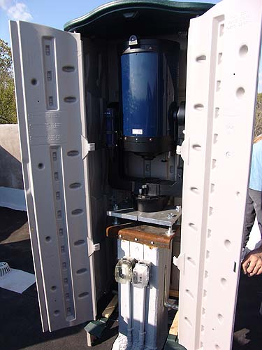

The telescope is on
the roof
Getting the parts and pieces up there
wasn't so bad.
Getting the telescope up 3 floors and
on the roof wasn't
so easy. We're thrilled it's permanently
mounted, but
we haven't had the right weather yet to
test it out at night.
We'll be watching and checking for leaks
when it rains, but
it looks like this is going to work.
First, showing how the moon rises
over the tower at night.
Banners on the crenelations and the
leaves are turning their fall colors.
The view from the rooftop.
Looking out over the horses'
pasture. Everything is dead and dry because we've had little rain this
year.

The enclosure just fits around the
telescope on its pier. There's electricity and computer connections that
go down into the tower.
(the telescope is a 12" Meade)
The doors close up and it doesn't
take up much room. We put the mats down so we didn't worry about hurting
the foam roofing material when we maneuvered the little building.
Not that much room up there, but the
building can lay down over in the corner at the right of the picture.
Just in case, we got a ratched strap
around the building. The floor is attached to the pier when it's closed
so it can't lift up. Everything is so snug it doesn't move around in the
strong winds we've been having.
It works like a two-wheeler when the doors
are opened and it's pulled away.